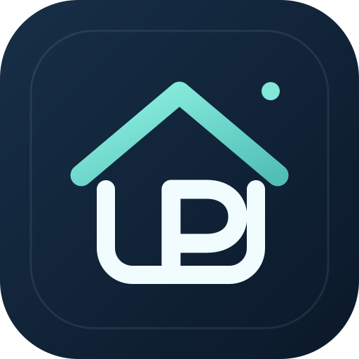

TurinPipps Torna all'appMonitora fino a 20 ricerche senza riempire Gmail. Google Alerts produce feed RSS e TurinPipps li consulta periodicamente. Riceverai soltanto il report riepilogativo TurinPipps se abiliti l'invio Gmail.
Apri Google Alerts, incolla una ricerca, apri Mostra opzioni. Come fonte usa Web, lingua italiano, regione Italia e quantità Tutti i risultati.
Nella voce Invia tramite scegli Feed RSS (non il tuo indirizzo email). Premi Crea avviso, poi copia il collegamento RSS dall'icona dedicata. Ripeti per le ricerche utili.
In Apps Script → Impostazioni progetto → Proprietà script crea ALERT_FEEDS e incolla tutti gli URL RSS, uno per riga o separati da virgola. Esegui runScan.
Premi Copia ricerca e incollala nel campo di Google Alerts. Sono ricerche di pagine pubblicamente indicizzate: non è garantita la copertura completa dei portali, né la disponibilità degli immobili.
TurinPipps-Agent, proprietario filippoaprilee, Only select repositories → filippoaprilee.github.io, permesso Contents: Read and write. Non inviare il token in chat.GITHUB_TOKEN (valore: token creato), EMAIL_TO (valore: destinatari report), e ALERT_FEEDS (valore: link RSS).installTurinPipps, autorizza il progetto, quindi prova runScan e sendTestEmail.